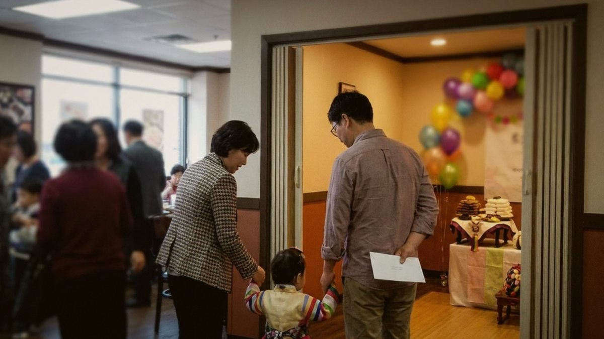
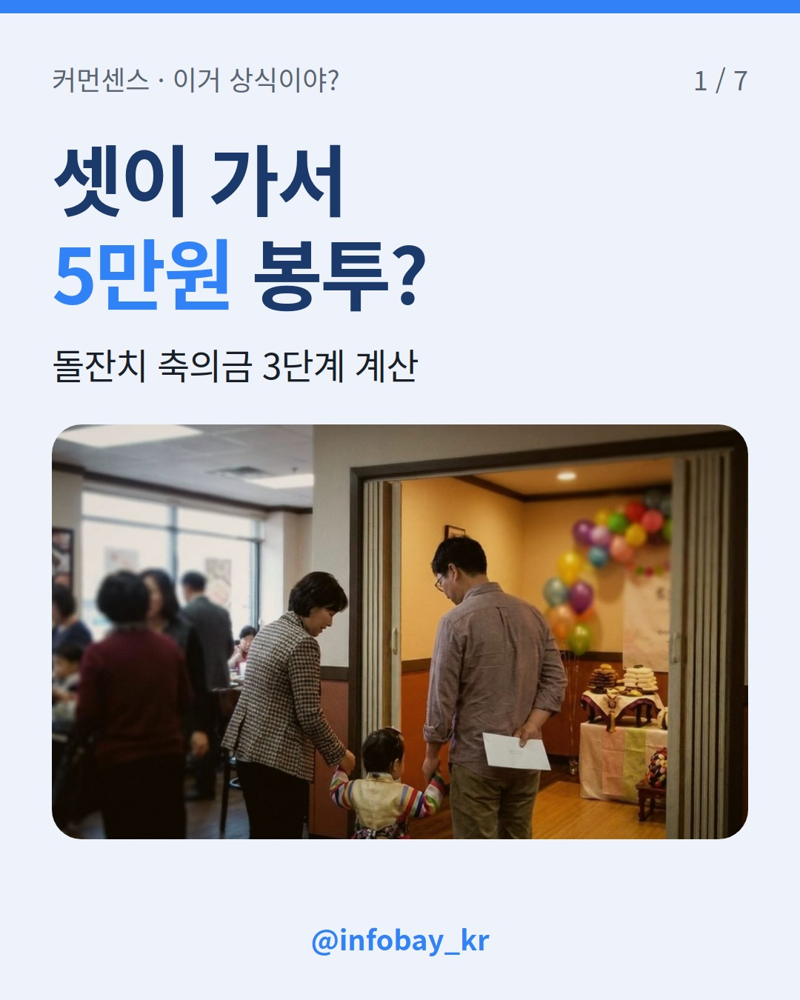
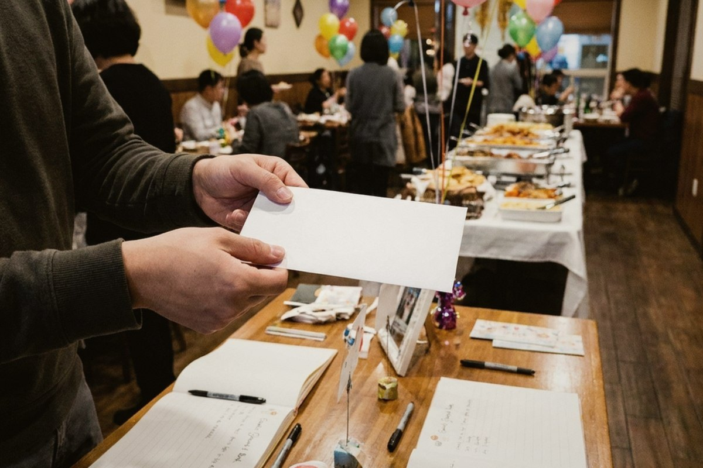

친구나 동료 돌잔치에 초대받아 봉투 금액을 고민 중이라면, 혼자 갈 땐 5만~10만원이 가장 흔한 범위예요. 가족이 같이 간다면 '식대 × 인원'부터 계산해 보세요.
한 줄 결론: 관계로 기본값을 정하고, 같이 가는 인원만큼 식대를 더한 금액과 비교해 큰 쪽을 고르면 가장 덜 어긋나요. 성인 식대 5만원 기준이면 어른 셋은 15만원부터예요.

혼자 참석하면 5만~10만원이 가장 흔히 나오는 금액이에요. 다만 결혼식과 달리 돌잔치 축의금만 따로 조사한 공신력 있는 전국 설문은 찾지 못했어요(2026년 11월 기준). 그래서 '평균'이라는 말은 쓰지 않았고, 여러 안내 글에서 반복되는 관례만 모았어요.
| 관계 | 흔히 나오는 범위 |
|---|---|
| 얼굴만 아는 동료·지인 | 5만원 |
| 같은 팀, 자주 협업하는 동료 | 5만~10만원 |
| 종종 만나는 친구 | 10만원 |
| 아주 친한 친구 | 10만~20만원 이상 |
| 삼촌·이모·고모 등 가까운 친척 | 20만~50만원 |
결혼식은 설문 숫자가 있어서 따로 정리해 뒀어요. 축의금 얼마? 평균 11만7천원인데 제일 많이 낸 금액은 5만원
식대가 사람 수만큼 나가기 때문이에요. 경북일보가 2026년 1월에 취재한 대구의 한 소규모 돌잔치 공간은 성인 식대를 5만원으로 안내했어요. 다른 식당은 코스를 1인 5만3천~6만3천원으로 받았고요. 아이 식대는 보통 반값이라는 안내가 많지만 곳마다 달라요.
| 같이 가는 인원 | 식대 합계 (성인 5만원, 아이 반값 가정) |
|---|---|
| 어른 1명 | 5만원 |
| 어른 2명 | 10만원 |
| 어른 2명 + 아이 1명 | 12만5천원 |
| 어른 3명 또는 어른 2명 + 아이 2명 | 15만원 |
이 표는 '이 정도는 넘기자'는 최소선을 가늠하는 용도예요. 관계 기본값이 더 크면 그 금액을 따르면 돼요.
주의할 점: 위 식대는 대구 사례예요. 호텔 돌잔치는 1인 7만~15만원이라는 안내도 있어서 서울이나 호텔이면 최소선이 더 올라가요.

못 가면 한 단계 낮춰도 실례로 보지 않는 편이에요. 밥을 안 먹으니 식대 계산이 빠지거든요. 참석했다면 10만원 낼 사이인데 못 간다면 5만원으로 낮추는 식이에요. 결혼식 불참 축의금도 같은 원리로 생각하면 쉬워요. 계좌로 보낼 땐 짧은 축하 메시지를 함께 남기세요.
친구·동료라면 현금이 무난하고, 돌반지는 가까운 가족이 고르는 선택지예요. 2026년 11월 24일 한국금거래소 고시 기준으로 순금 한 돈(3.75g)은 살 때 69만원대(부가세 포함), 팔 때 59만8천원이에요. 사는 값과 파는 값이 10만원 가까이 차이 나는 데다, 반지로 사면 공임(세공비)이 따로 붙어요. 금값 변동도 커요. 11월 셋째 주 한 주 동안만 한 돈 구매가가 73만4천원에서 67만2천원으로 8.4% 떨어졌어요.
| 선택지 | 어울리는 관계 | 아쉬운 점 |
|---|---|---|
| 현금 | 대부분의 하객 | 기념으로 남지 않아요 |
| 반 돈 돌반지 (1.875g) | 가까운 친척, 아주 친한 친구 | 공임이 붙고 시세가 수시로 바뀌어요 |
| 한 돈 돌반지 (3.75g) | 조부모, 가까운 가족 | 공임 빼고 금값만 69만원대예요 |

받은 기록이 있으면 그 금액이 1순위예요. 내 결혼식이나 우리 아이 돌잔치 때 받은 만큼 돌려주는 방식이 여러 안내에서 공통으로 나와요. 몇 년 전 금액이라 식대가 올랐다면, 그 금액과 '인원 × 식대' 중 큰 쪽으로 맞추면 덜 어색해요.
Q. 돌잔치 축의금은 결혼식보다 적게 내도 돼요?
보통 결혼식과 같거나 한 단계 가볍게 낸다는 안내가 많아요. 다만 가족이 같이 간다면 식대 계산부터 해 보세요.
Q. 돌잡이 때 돈을 따로 내야 해요?
정해진 관례는 없어요. 돌잡이 때 5만원 정도 더 내는 사람도 있지만 개인 선택이에요.
Q. 봉투에 이름은 어디에 써요?
경조사 봉투 쓰는 기본은 부조봉투 쓰는법, '삼가 고인의 명복을 빕니다'는 봉투에 안 써요에 정리해 뒀어요.
이 상황, 당신은? 아이 둘 데리고 가는 돌잔치, 봉투 금액을 그대로 둘지 인원수만큼 올릴지 커먼센스에서 투표하고 세대별 결과를 확인해 보세요.
다음에 할 일은 하나예요. 같이 갈 인원을 세고 '인원 × 5만원'을 먼저 적어 보세요.
2026년 11월 기준, 언론 보도와 한국금거래소 고시 시세 확인.